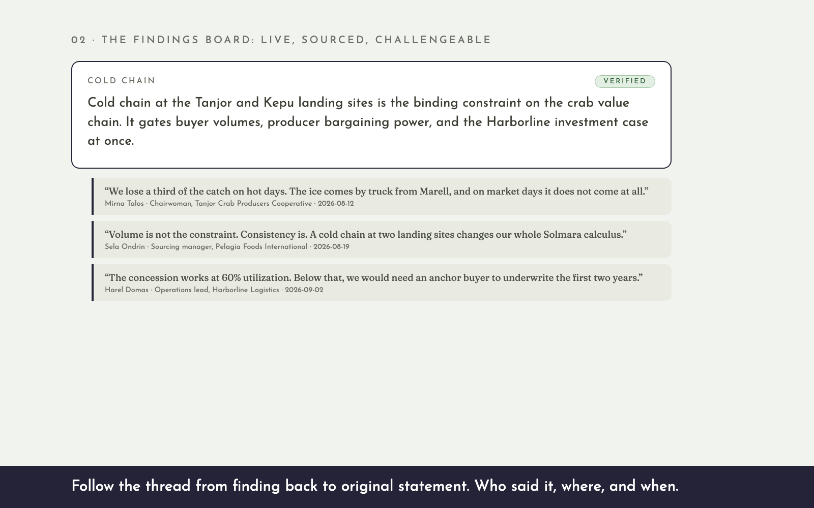

Chapter 1 · Advanced Analytics Solmara Investment PipelineTurn program data into decisions. Fourteen prospects, one comparable score, and a senior analyst's judgment on what the numbers miss.
Watch the 90-second walkthrough → Open the demo →